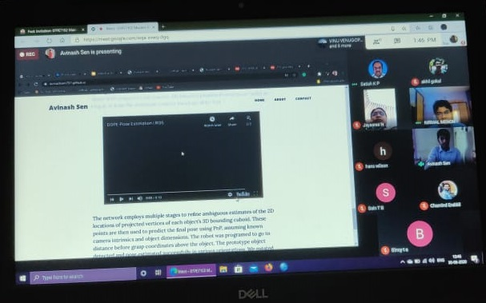
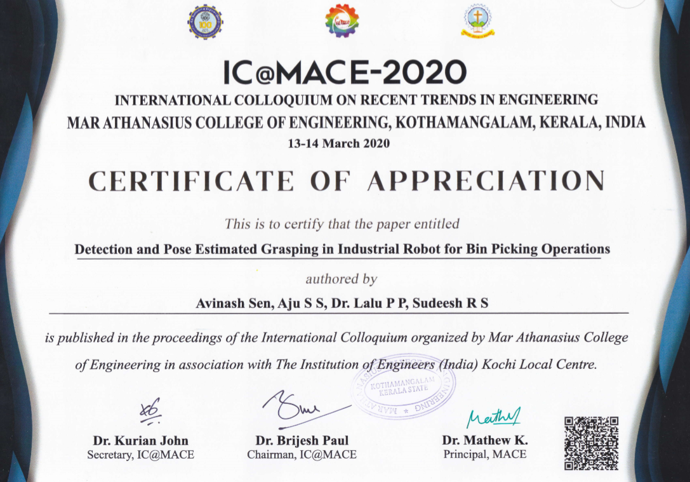

Final Viva Voce
On 03/08/2020, I successfully defended my Master Research Project. Finally able to complete my thesis in "DEVELOPMENT AND EVALUATION OF A DEEP LEARNING BASED ROBOTIC BIN PICKING VISION SYSTEM USING ROS" All thanks to my mentor Prof Dr. Lalu PP (Cordi. Nodal Centre for Robotics & AI), my Guide Prof Aju SS (Department of Production Engineering), and to my friends who contributed their skills and showed patience with me in developing this thesis.

CERTIFICATE OF PAPER PUBLISHED

Endorsements
NODAL CENTRE FOR ROBOTICS AND ARTIFICIAL RESEARCH (NCRAI)
This work has been supported by Nodal Centre for Robotics and Artificial Research (NCRAI) of Government Engineering College, Thrissur. Project development, subsequent testing and Evaluations are held on this laboratory.
Nodal Center for Robotics and Artificial Intelligence is being established at Government Engineering College Thrissur with two fold objective of 1) Providing facilities for frontline research in Robotics and AI 2) Organizing and Training and skill development programs for Technical Institutes in the field of Robotics and AI. The facility is envisaged to be shared by various Colleges, Polytechnics and Technical High Schools under Department of Technical education Kerala and function as center of excellence in Robotics and AI. The center was started functioning in June 2019 is funded by Higher Education Department, Government of Kerala.
ROBOTICS AND AUTOMATION SOCIETY OF IEEE SB GEC
Received First Prize for the Technical Paper Competition organized by Robotics and Automation Society of IEEE SB GEC Thrissur.